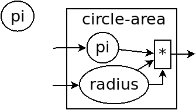

PL教程 第一章 人和机器
我们的机器
首先我得说，本来这些杂七杂八要放在前言里讲的，结果是… 想说的话实在太多，前言已经尽可能地收敛了，还是不知不觉扯远了， 前言越到后面写的越跟编程没关系了。所以现在简单说说吧。
又要提 Dijkstra 的名言了
教一群被 BASIC 语言先入为主的学生，什么是好的编程风格， 简直是一件不可能的事。对于一些有潜力的程序员， 他们受到的智力伤害远远超过了重建他们的信心。
语言就是人表达的方式，语言塑造了人的世界。
受应试教育的绝对影响，很多人接触编程就是从算法竞赛开始的， 然后被老师灌输过他们的理论以后，理所当然地认为编程就是算法、数学。 当然，很多人跟不上进度便不学了，跟我一样，这是好事。
我现在也不知道这些误解到底是从哪来的，但我发现编程跟写作真的很像， 算法就是那些写作手法，数学可以比作一些特定的知识，比如历史。 你可以教小学生再多的手法和各种知识，但不要指望有人能写出好的故事。
原因在于，写作唯一的目的是表达自己的想法，编程就是为了解决问题。
要写一篇好文章，一些手法必不可少，但是重要的东西还有很多，
学习手法也要建立在文章写的清楚的基础上。另外，如果要写三国演义，
那必须精通历史，但也有很多时候用不着那么高深的历史。
编程就是一样的道理。
程序语言理论(PLT，Programming Language Theory)就是对语言本身的研究， 它首先就教你写出简单的程序，建立信心。当然了，再深下去， (虽然我挺喜欢的)，但对实际生活来说，没什么必要， 大多数人也不感兴趣。我只是想把最简单的东西讲一讲， (因为稍微难一点的东西我不会)，普及一些正经的课程或书不会提到的东西， 讲一些刚学的时候很难理解，但理解以后会感觉“编程怎么这么简单”的知识。 顺便一提，我希望最后能让读者学会所有程序语言(共同特征和各自的优缺点)， 能学会发明自己的语言:p
语言的差距是很大的，我想尽量讲的简单，让人不要丧失太多的信心。 这就是这系列文章的目标。我还不知道我能不能做到。
给个例子吧，排序，大家都知道，但我一看见那两重循环就头疼， 直到我学了 Scheme 语言:
(define (sort ls) (if (null? ls) null (let ([m (apply min ls)]) (cons m (sort (remq m ls))))))
接触过的人肯定会有意见，但我不是想显示一下有多简单嘛，
第一行定义这个函数名叫 sort, 第二行处理空列表，第三行找最小值，
第四行递归进去。你跟别的语言比一比就知道了。
那是我第一次发现，写程序这么简单。就在那时我才对编程有了兴趣。 以前学算法都只是死学而已.
我也啃过那本著名的算法导论，说实话，我觉得真正能看下来的不是一般人。 为什么呢，那里面的代码…实在是太恶心了。 我都只能看书上的图画，不看代码， 因为书上的代码复杂到没法看。真的。我是那种见到麻烦的东西就泄气的人， 比方说吧，我还记得书上红黑树的代码直到最后也没看下去，但是没关系， 因为我看到了一本 ML 语言的教材，它也讲到了红黑树，我一下子就明白了。
人使用的语言和接触的环境是会改变人的思考方式的。
追求简单就是我这些文章的目标，当然，只是尽量简单， 我不保证不动脑也能看懂。(动脑指的不是记忆，而是理解。)
长期以来，有个事一直在困扰我，那就是越昂贵的，越是前沿的， 就越可能是没用的。然后，困扰我的另一个事是，电脑是一个死的机器， 却可以不可思议地完成那些巧妙的事情，而程序员是那么聪明的人， 却在做着不可思议的愚蠢的事情。简而言之，他们真是天生的一对。
—— Bill Bryson
数字们
首先，一个程序是什么?
举个例子吧，这是个什么也不干的程序:
你给它一个数字，它再还给你。我们的电脑可以储存整数和大概十几位的小数。
有了数字，那么计算是必须的。
可以看出来，写着加减乘除的方框是一个神秘的机器， 它吃进去两个数字，把结果吐出来。
这其实就是四个简单的程序，我们不用在乎它们对数字干了什么， 反正得到了想要的结果，应该相信它们。
程序当然不会这么简单，现在拿出纸(画图软件也行)，照着画一下
1+2*3, (1+2)*(3+4), 1+2+3+4
(谁也不能阻止你不画就往下看，但题目不是我随便写的， 请不要看得太快)
我认为总会有人遇到问题的。
首先，这些计算可以组合起来，需要留意的是，它们不是同时发生的，
计算 1+2*3, 首先是2和3进入乘法器里，等6出来之后，
它和1一起进入加法器。
第二个问题是， (1+2)*(3+4) 中，两个加法能否同时运行。
在学更多的东西之前，你可以认为，电脑里只有一个加法器，
它算完 1+2 之后，赶紧跑到下面去算 3+4, 然后3和7一起进入乘法。
你的头脑里只要有这个动画就行(当然，学了硬件以后就是另外一回事了)
最后一个就有些微妙，有人可能有不一样的结果，可能是 (1+2)+(3+4)
而不是 ((1+2)+3)+4
计算机不允许有歧义，很多语言明确规定是我画的那种，从左向右组合， 有些语言随便来，就可能导致一些问题。比如有一个计数器，每次加1， 把两次结果相减。那我们就不能确定结果是 1 还是 -1 了。 但现在最好忘了这个东西，最好的办法就是永远不写这种代码， 一切问题就都没有了。(如果初学者看不懂请反映给我，考虑删掉这段)
思考题: 我们有没有漏某种情况?
虽然很烦人，但程序的问题就是这么出现的，考虑边边角角是个好习惯。 至少需要知道，一个数除以0会怎么样。 按照常识，程序会出错，就是这样。不多说了。
圈养
宠物多了就难管，数字多了也一样(瞎扯)
比方说，要计算复杂的公式，或者有重复的式子，比如 1+2 的平方:
画两遍 1+2 就有些麻烦(虽然我是复制粘贴..)，
还费时间费电，变量就出现了。
先定义个变量 three, 然后让它平方。
(变量可以是字母，或减号、问号等规定的几个符号连在一起，
末尾可以跟数字，比如 ab-cd-ef123. 先不用太管这些)
变量跟加减乘除其实长得很像，确实是这样的，之后就会了解。
即使没有重复的计算，也应该适当使用变量，并给它取个好名字， 这样程序就更容易读懂了。
变量的名字对电脑来说无所谓，只要不重复就行，只是对人来说就不一样了。
这就是变量的两个用处: 储存、给人看。
当然，变量只能储存一个数字，总不能说要把一个程序塞进变量里吧。
关于变量其实就这么多。
箱子
数学老师讲过什么叫函数。也许是这么说的:
y=x+1
这就是个函数。
可是在程序里就有点问题了，如果是这样:
那 y 只是个变量而已，如果这个程序的前面定义过 x 是多少，
那么 y 就是它加1，一个固定的数字，如果 x 没有定义过，那程序就出错。
那什么是函数呢，你可以想象成一个机器，有入口，有出口，
在内部对数字进行一些加工。简单来说，把 x+1 打个包就是个函数了。

它左右的两根线就是入口和出口，这个 x 被包在了函数里面，
然后被传给了一个加法器，(1就是凭空出现的)，然后把结果传出去。
我这里只是把它画成了透明的，实际中是看不到函数内部的，
所以我们给它贴了个名字叫 add1, 告诉我们这个函数的作用。
(叫它 y 或者 f 都可以，但因为这些名字没有意义，所以不推荐)
思考: 仔细对比之前学过的几幅图，你可能会发现什么。
第一个发现: 函数就是个小的程序，程序就是个函数。 它们长得是一样的。这告诉我们，一个程序的本质不是一行行代码， 它只不过是得到一些输入，按你的要求计算一些东西，然后输出而已。 (其实很早以前，函数(function)就被叫做子程序(subroutine))
第二个发现: 函数长得跟加减乘除一模一样。也就是说， 加减乘除其实就是函数! 你看，它们的概念也是一样的， 输入、加工、输出。编程中函数的定义更广了，函数可以有任意数量的输入， 而不只是一个。
从这里我们就大概能体会到函数存在的意义了， 在电脑中，一个加法都是很复杂的，你知道的，通过各种二进制的电路来实现， 但是你学编程，不需要知道电路是怎么样的，只要使用加法函数就可以， 那个加法函数的内部，其实是极其复杂的运算。
这就是函数的意义，它让你不用每次做加法都把复杂的计算写一遍， 而是一个加法函数搞定。你自己写的函数也是一样。
举个例子， sqr 函数是平方函数: sqr(x)=x2
这3个函数的作者分别是正常人，一个疯狂的黑客，还有一个存心坑你的人， 除了速度快慢，你并不能感觉出什么差异，反正你用的开心就可以。 在写大一些程序的时候，这个作用就体现出来了。
我啰嗦这么多，看起来很简单，可是确实这点容易被忽视。 刚开始学的时候，我们都没有把一块程序提取出来成为一个函数的意识， 我看过的很多代码，比如要算x2 还采用了第二种做法， 却不把它写成函数，看过去就是一大堆 …… x …… 要费很大功夫才能看懂别人要干嘛。就因为这个， 很多教科书建议大家写注释，就是在旁边注一句“这段代码把x平方”。 可是只要写成函数，它自己就充当注释的作用了，这些麻烦就都没了。 (说这么多其实没啥用，考虑删掉这段)
需要注意的是，没有那个好工程师会赞成写一个“摧毁巴克达”的函数。 最基本的职业规范告诉他们，应该去写一个叫“摧毁城市”的函数， 然后把“巴克达”当成这个函数的参数。
—— Nathaniel S. Borenstein
降维打击
到现在我只画了图，因为那个图才是程序的含义， 现在有这样画画图就可以编程的语言，但我都不满意。 所以还是只能学要一行一行打代码的语言了。 画图多形象啊，为什么大家都喜欢写代码呢。
我费了好大的劲挑出来个语言叫 Racket，虽然还是很不满意，但除了语法， 没有什么明显的缺点，只要不被它的括号吓跑的话…
输入一个数字，Racket 就会原样输出。
> 2333 2333 > -123.456 -123.456
一个大于号“>”后面是我们的程序，之后是结果。 如果一行写不下可以换行。
这是加减乘除
> (+ 1 2) 3 > (- 3 2) 1 > (* 2 3) 6 > (/ 10 2) 5 > (+ 1 (* 2 3)) 7 > (+ (* 1 2) (- (/ 4 2) 1)) 3 > (+ (+ (+ 1 2) 3) 4) 10 > (+ 1 2 3 4) 10 > (* 1 2 3 4 5) 120
首先，加减乘除的格式是统一的，一对括号，括号中第一个是函数，
后面跟参数，用空格隔开。所以 (+ 1 2) 就是数学中的 (1+2)
函数可以嵌套，比如

放心，以后不会有这么复杂的代码了。
(话说回来，也许代码比画图有个好处，因为代码稍微复杂点就看不清楚，
所以它逼着人们写简单的代码。)
(但照这个逻辑下去，我们是不是应该都去写机器代码?)
数学中的函数是有优先级的，但 Racket 里没有，而且也不能省略括号或乘号，
也不能多加括号，因为 (1) 中的1的位置应该是一个函数，
但1不是函数，所以会出错。总之，就是完全的死板就对了。
最后是 Racket 提供的一个便利的写法，因为连续相加和相乘很常用， 所以加法和乘法可以有任意个参数。
这就是所有的数学内容。
定义变量:
> (define abc 123) > (define this-is-a-variable (+ abc 1)) > abc 123 > this-is-a-variable 124 > (define abc 100) 出错，因为变量不能重复定义
定义变量的语法是 define, 跟着要定义的变量的名字和它的值。
思考: define 是函数吗?
那要先看看函数是什么。
一个函数，在调用之前应该先计算它的参数，比如 (+ (* 1 2) abc)
(假设 abc 还是 123)，程序先计算 (* 1 2) 结果是2, abc
结果是123，然后再运行 (+ 2 123)
如果 define 是函数，那么比如 (define x ...) 需要先计算
x 的结果，但这时候 x 还没有定义。显然是不对的。
define 只是一个特殊的语法。它只是定义变量这个动作，
它也不像函数有一个输出。
> (define m (define n 100)) 出错，因为 define 只是个动作，没有输出 > (+ 1 (define x 100)) 出错，同理
下面就是函数了。
> (λ (x) (+ x 1)) #<procedure>
λ 开头是一个函数，接下来是一个括号，括号里是参数的名字，
再接下来是函数输出的值。很明显，λ也是个特殊语法。
顺便一提，它的结果是 #<procedure> 而不是原模原样的
(λ (x) (+ x 1)), 就是因为这个函数内部已经看不见了。
因此所有的函数在我们看来，都是一样的 #<procedure>
函数也可以有很多个参数，比如
> (λ () 1) ;; always 1 #<procedure> > (λ (x) (* x x)) ;; square (平方) #<procedure> > (λ (pi radius) ;; area of circle (圆面积) (* pi radius radius)) #<procedure>
跟在分号后面，颜色不一样的是程序的注释，会被计算机忽略。
上面只是写了几个函数，但就像只写个数字一样，不把它定义给变量， 它就消失了。
> (define always1 (λ () 1)) > (define sqr (λ (x) (* x x))) > (define circle-area (λ (pi radius) (* pi radius radius))) ;; 或者 (* pi (sqr radius))
你可能又发现了，定义函数的语法跟定义变量是一样的， 只是后面跟数字还是函数的区别。 现在，变量的含义增加了。变量可以储存一个数字或者一个函数。
调用函数也是一样的，括号中第一个是函数，后面跟它们的参数
> (always1) 1 > always1 ;; 注意跟上一个的区别 #<procedure:always1> > (sqr 3) 9 > sqr ;; 数学上总是用(sqr x)表示这个函数， ;; 你会发现是多么错误的一个写法 #<procedure:sqr> > (circle-area 3.14 10) 314 ;; 等价于直接用 λ 替换 > ((λ (pi radius) ;; 最外面的括号是函数调用 (* pi radius radius)) ;; λ外还有一层括号 3.14 10) 314
就跟数字可以直接写出来一样，函数也可以直接用，只是看起来复杂。
我们定义和使用一个函数其实是这样的，它们在计算机中都只有一个， 但是存进变量以后，什么时候使用它，变量就把它拿出来， 跟拿出一个数字一样。

因为这么画太不方便，所以才画成函数上面贴个名字。
有人可能会好奇函数是怎么存进变量里的，答案就是，
变量存的其实还是个数字。
地球上任意的位置都可以用数字(经纬度)表示，用 GPS 可以定位，
电脑里也是这样。函数也是一段程序，它在电脑里有一个地址，
这个地址就是个数字。我们要调用这个函数，只要知道它的地址，
就可以找到这段程序，然后运行，就是这么简单。
最后的问题就是，函数参数的名字。
> (define x 1) > (define f (λ (x) (+ x 1))) > (define g (λ (x) (+ x 2)))
大家都知道这3个 x 没有关联, f 和 g 的参数不会暴露在外面，
所以即使调用 f 和 g 也不会导致 x 被重新定义。

函数 f 和 g 中定义的 x 都在函数内部，电脑遵循就近原则(又是瞎扯)，
函数内有 x 了，就不去函数外找了。如果没有，再找函数外的，比如
> (define h (λ (y) (+ x y))) > (h 2) 3

如果函数外也没定义 x, 那就只能出错了。
可以想一下这样做的好处。很多时候，程序里有很多很多变量， 比如用户名、密码或者各种常数，大一点的程序是很多人一起写的， 每个人都不知道别人到底定义了什么，要阻止重名是不可能的事了。
很容易想到的就是，我调用一个函数，如果我定义过了，那就先用我的， 不用管别人定义了什么。问题就解决了。
思考: 上面的做法有 bug，不知道你能不能看出来
注: 这是一道超级难题。去看看历史就知道它花了科学家多长时间。
直到现在还有些语言有这个问题。
提示: 调用 h 函数。
看看这个函数吧。
> (define i (λ (x) (h 1))) > (i 100) 2 ? 101 ?
现在的问题来了, h 中的 x 到底是哪个 x, 是外界的变量
还是 i 的参数?
(你最好拿张纸把这几个函数抄一下，在纸上打打草稿， 不然来回翻页很麻烦)
照我们前面的解释，调用 (i 100) 之后，离 h 更近的 x 变成了100，
所以结果是101.
或者，因为 h 是 (λ (y) (+ x y)), 所以把 h 用它的值代换，
i 就等价于
(λ (x) ((λ (y) (+ x y)) 1)) (别费眼睛数括号了，知道怎么回事就行了)，
所以 i 变成了 (λ (x) (+ x 1)). 答案就神奇地变成了101
最古老的语言就都是这么做的，因为看起来理所当然。
但理所当然是不行的，对一个语言来说，实用才是关键。
所以还要看看它靠不靠谱。比如 h 是我写的，我为了方便，定义了个变量
x, 然后在 h 里用了 x, 然后把代码发给了你，
你上来就写了个 i, 你看了看, i 虽然有个参数 x, 但没用到，
所以应该永远是个定值 (h 1) 的。结果发现 (i 10) 是11，
(i 100) 是101，很不对是吧。都是 (h 1), 结果居然不一样。
这还怎么写代码。
那我也很不爽啊，我好好地定义了个 x, 结果被你的给覆盖了。
(可能有人觉得，没人会定义 x 却不用，那我大不了就用一下呗，
比如把 (h 1) 改成 (+ x (h 1)) 就好了。实际的例子暂时举不出，
但很多很多的，特别是黑客攻击的时候，简直相当于所有的代码都暴露给别人了)
事实已经证明了，这对一门语言来说绝对是个灾难。
于是有人发现，我们说“最近的变量”，不应该是在使用的时候，
而是在定义的时候。 h 在定义时, x 就是1，
那它就应该保存那个 x, 它的 x 就应该一直是1.
现在一个函数不只包含一段程序了，它还要包含它定义的时候， 所有用到的变量的地址。
> (λ (...) ...) #<procedure>
现在能理解为什么函数只会显示个 #<procedure> 了吧。
函数里包含了一堆东西，没法把它显示出来，只能用个 procedure 糊弄你一下。
但这确实就是函数的全部了。
现在再看看我们画的图，就不会出现这种问题。 很清楚，我们画下这个函数的时候，就已经确定了所有变量的来源。 实际上在图中，完全可以把变量的名字去掉，因为使用变量不需要通过名字， 只需要知道它在哪就可以(地址)，这就向机器语言又进了一步。
对于想知道术语的人: 现在的做法叫静态作用域(static scoping) 或词法作用域(lexical scoping)，过去的做法叫动态作用域(dynamic scoping). 因为过去变量是在函数调用的时候找的，是“动态”查找的。 现在定义时候变量就确定了，是“静态”的。
在 Racket 中玩耍
这章讲如何安装 Racket. 懒得搞这些东西的话可以直接跳过。
我故意跟别的教材不一样，其它的书都先让人安装各种软件， 这样就可以在电脑上一边看书一边试验了，这是好事。 但是，我发现一直待在电脑前，让我养成了一个很坏的习惯: 当我思路还没理清楚时，就迫不及待地想到哪写到哪， 最后把整个程序搞得很糟，只能反复找 bug. 相反， 如果我手头没有电脑，我就只能在纸上打草稿， 就不那么容易随便修改，所以必须让程序在脑子里完全成型了再写下来， 最后把它打到电脑里，一次性就是完全正确的。
电脑本来就只是辅助你运行程序的，如果自己没有完全理清思路， 就不要指望电脑能得出正确的结果。
还要说的是，你用什么样的电脑，什么操作系统，你的打字速度， 都是没有关系的。一定要用你最熟悉的操作系统， 或者你的朋友用啥你就用啥。我看到有些教程一上来就让你装 Linux 和 各种开发环境，有人折腾半天还没开始编程，这是很糟糕的。 (但是如果你还在用 Windows XP，我无法保证你能安装，因为太老了， 建议换个新操作系统吧。)
首先，Racket 官网是这个 https://www.racket-lang.org，
你也可以直接去下载页面 https://download.racket-lang.org，
默认下载就可以。如果你不熟悉，一路默认安装就可以，
安装完以后你的桌面上就会出现 DrRacket 的快捷方式了。
(使用 Ubuntu 的可以直接通过 apt 安装 sudo apt install racket ，
DrRacket 会添加在你的桌面应用里面。
当然也可以用 Emacs 来编辑 Racket，我一直用的是 racket-mode，
自己稍稍配置一下 paredit 什么的，用起来还是过得去的。)
打开 DrRacket 以后，首先就在文件里打一行 #lang racket ，
然后应该就可以写代码了。具体不会操作的请直接上网搜，
如何安装/使用 DrRacket
然后一定要记得切换到英文输入法，因为中英文的标点符号都是不一样的。
接下来就可以玩耍了。
在 定义窗口 写一些变量定义，然后点屏幕右上角的 run 或者按 F5 ， 就可以运行定义的内容，然后在 交互窗口 输入一些东西的计算。 (具体怎么操作网上有详细教程)
总共就这些要讲的，但如果你觉得不够，我就再说一些杂七杂八的内容。 这些不要记，知不知道都无所谓，就当了解一下了。
先说一些数字计算
> (/ 7 3) 7/3 > (/ 7 3.0) 2.3333333333333335 > (expt 2 100) ;; the 100th power of 2 10715086071862673209484250490600018105614048117055336074437503883703510511249361224931983788156958581275946729175531468251871452856923140435984577574698574803934567774824230985421074605062371141877954182153046474983581941267398767559165543946077062914571196477686542167660429831652624386837205668069376 > (sqrt 2) ;; square root 1.4142135623730951 > (cos (/ pi 3)) 0.5000000000000001 > (exact->inexact 7/3) 2.3333333333333335 > (inexact->exact 2.3333333333333335) 5254199565265579/2251799813685248 > 1.23e5 123000.0 > 2e20 2e+20 > 2e-4 0.0002
- Racket 支持分数表示，但分子和分母只能是整数。
- 如果是小数运算，结果也是小数，但小数计算的最后几位都会不精确。
- 次方函数和平方根函数
- Racket 提供了三角函数和
pi的定义。 - 接下来两个函数是在精确值和不精确值之间转换的。
- 一个数后面紧跟“e”再加一个整数表示科学计数法，
比如
1.23e5就是 1.23×105
还有很多各种各样的变量和函数可以使用，具体请上网搜索或查官方文档。
最后，既然已经没的讲了，我就随便编一个 sqrt 函数，
自己实现一个简单的开平方根的函数。我实在不想推导数学公式，
你们会什么方法就用什么方法，我不想在这说，反正你们只要知道结果就行了。
比如我们要求 \(\sqrt{a}\) ，我们设 \(f(x)=\cfrac{a+x^2}{2x}\) ， 然后随便取一个初始值，比如 1，然后一直调用 \(f\) ，就像 \(f(f(f(...f(1))))\) ，得到的结果就会越来越接近于 \(\sqrt{a}\) 。
因为我们现在还没学更多的内容，我们只能让 f 接受两个参数，
a 和 x ，所以
(define f (λ (a x) (/ (+ a (sqr x)) (* 2 x))))
然后 sqrt 函数也很简单了，就是一直调用 f 而已
(define sqrt (λ (a) (f a (f a (f a (f a (f a 1))))))) ;; tests > (sqrt 4) 926510094425921/463255047212960 > (exact->inexact (sqrt 4)) 2.000000000000002 > (exact->inexact (sqrt 2)) 1.4142135623730951
可以看得出来，对于比较小的数，结果还是比较准确的。
比较有意思的一点就是虽然 f 接受两个参数，但它们是有主次之分的，
a 只是一个附加的材料，而 x 像是主要的产品，一直顺着 f 流动。
你可以自己画一下图试试。
习题
能看懂这一章提到的语法，自己随便想几个简单的函数写一写。
注: 前面写的圆面积的函数不是很好，因为 π 一般作为一个常数， 会定义成一个变量，而不是每次作为参数。
(define pi 3.14) (define circle-area (λ (radius) (* pi (sqr radius))))